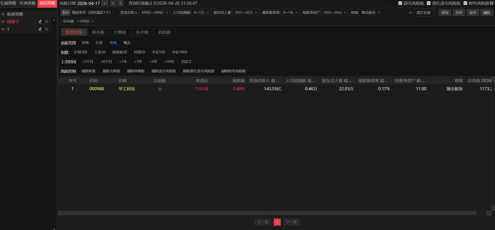

F.01
意图降维解析
将自然语言转化为标准 JSON 策略，收敛为可执行参数集合（可追溯、可复现、可校验）。
PROJECT 01 · 商业级 AI 产品
自然语言意图选股系统
聚焦核心交易链路，摒弃无用的 AI 财报生成。通过 LLM 精准解析自然语言，动态下发 API 参数， 无缝连接后端的量化数据源（如 AkShare 等）。
POSITIONING
Intent-based Screening
ARCH
Front Param → API Router
DATA
AkShare / Indices / Factors
ACTION
这是一个可双击运行的静态交互 Mock。点击按钮后模拟大模型解析与参数下发，随后填充 JSON 与 AkShare 调度代码。
滚动体验在线 DemoLatency (mock): 1.2s – 1.8s
Output: JSON Strategy + AkShare Call
FEATURES
细线网格 · 清晰层级 · 可扩展
F.01
将自然语言转化为标准 JSON 策略，收敛为可执行参数集合（可追溯、可复现、可校验）。
F.02
突破硬编码限制：参数由前端动态传递，支持海外指数扩充与新增筛选维度的低成本迭代。
F.03
兼容基本面与技术面：估值、成长、波动、趋势等因子可并行组合，形成可解释的筛选漏斗。
F.04
Next.js + Python 架构：前端快速试错与交互验证，后端策略路由与数据源适配并行迭代。
F.05
记录「输入 → 意图 → 参数 → 数据 → 结果」，支持实验复盘、线上问题定位与策略迭代对比。
F.06
将指数、市场与数据源抽象为配置：扩展到日本/美股等市场时，不再重构主流程。
LIVE DEMO
Intent → SQL → DB Result (Demo)
INPUT
Ready输入一句话，系统将其解析为「业务字段 JSON」，并自动生成可执行的 SQL 查询策略（符合投研数据仓库检索习惯）。
Hint: 解析结果会联动生成 SQL，并触发展示下方的结果表。
AI 意图因子提取 (JSON)
{
"status": "idle",
"message": "点击左侧按钮开始解析"
}
自动生成 SQL 查询策略
-- SQL will be generated here
-- 示例：SELECT ts_code, name FROM stock_basic ... WHERE pe_ttm < 20;
说明：真实投研环境通常以内部 SQL 数据仓库为主。此处展示「自然语言 → JSON 因子 → SQL 策略」链路，并在下方模拟查询结果回传。
ITERATION
复盘式表达 · 漏斗化演进
以“回答型能力”为主：生成摘要、给出建议，价值密度不稳定，容易偏离核心交易链路。

把自然语言收敛为「可执行意图」：先解析出筛选维度与约束，再进入数据检索与组合逻辑，让结果更可控、可解释。

解决“接口写死”的扩展瓶颈：将市场、指数、字段映射与筛选参数做成前端可配置的参数路由层， 支持海外指数与新数据源的快速扩充，形成商业级可持续迭代能力。